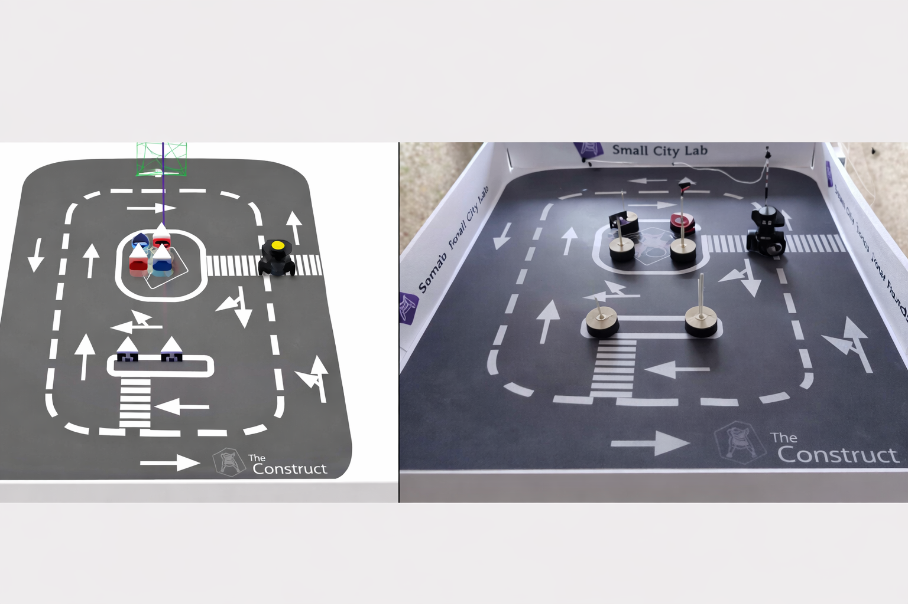

Project
Develop and implement a control system for a mobile robot using ROS2, capable of operating in both simulation and real-world environments, and performing autonomous navigation with obstacle avoidance.
A mobile robot control system was developed using the ROS2 framework, integrating simulation in Gazebo and deployment on a real robot platform. Bash scripts and Python-based interfaces were used to communicate with the robot, enabling motion control through velocity commands and real-time sensor data acquisition. Custom getter and setter functions were implemented to interact with robot parameters such as LiDAR scan data and odometry. A naive obstacle avoidance algorithm was programmed to allow the robot to navigate autonomously by reacting to surrounding obstacles. Additionally, a monitoring script was created to display robot statistics such as position, orientation, and distance traveled.
Development of control scripts, implementation of robot functions for sensor and actuator interaction, programming of the obstacle avoidance algorithm, and testing in both simulation and real robot environments.
The robot successfully navigated autonomously in both simulated and real environments, avoiding obstacles using sensor data. Stable communication with the robot interface was achieved, and real-time monitoring of robot state and performance was demonstrated.